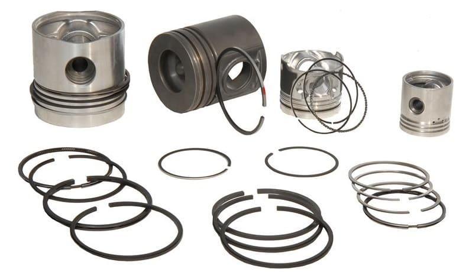
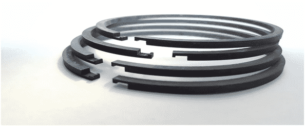
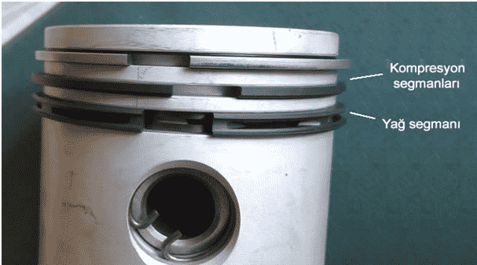
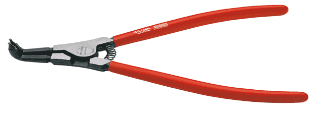

Segman; motordaki hava ve yakıtın karışması sürecinde sızdırmazlık sağladıkları için kompresyon kalitesini yükselten motor elemanlarıdır.
Makineye ait çeşitli bölümlerde ve özellikle motorlarda bulunan halka biçimindeki parçalara segman denir. Segmanlar piston ve silindir arasındaki gaz ve çeşitli kimyasalların sızdırmasını engellemekle beraber motor içindeki yanma odalarında bulunan yanmış gazın kartere dolmasını da önlemektedir.
Mukavemet gücü yüksek olması açısından genelde çelik alaşım kullanılarak imal edilen segmanların deformasyonu ya da motorda kullanılmaması durumunda sızdırma gerçekleşeceğinden yakıt emme zamanında hava-yakıt karışımının silindire verimsiz bir şekilde dolma durumu söz konusu olacaktır.

Kompres zamanında piston alt ölü noktadan üst ölü noktaya yükselirken silindirde yer alan karışımdan bir miktar kartere dolar ve kompresin verimsiz bir şekilde gerçekleşmesine neden olur. İmal edildiği çelik alaşımlar motorda meydana gelen yüksek sıcaklık ve basıncı soğurur.
Bu sayede uzun bir süre esneklik özelliklerini yitirmeden görevlerini gerçekleştirirler. Soğurma işlemi özellikle ateş segmanı adı verilen üst kör nokta kompresyon segmanında gerçekleştiğinden bu parça molibden elementi ile kaplanmaktadır.
Motordaki hava ve yakıtın karışması sürecinde sızdırmazlık sağladıkları için kompresyon kalitesini yükselten motor elemanlarıdır. Pistonlu makinelerde kullanıldığından pistonda gerçekleşen ısı enerjisini silindire aktararak ısınmadan kaynaklı motor performans düşüklüğünü de engellemektedirler. Kompresyon ve yağ segmanları olmak üzere iki türü bulunmaktadır.

Yağ segmanları piston ve silindir arasındaki sürtünme kuvvetinin azaltılması esasına dayalı çalışmaktadır. Sürtünme kuvvetinin azalması ile yağın gereksiz ve verimsiz kullanımını önlemiş olurlar.
Kompresyon segmanları ise pistonun yüzeyi ve silindir kapağı arasına takılmakta olup havanın kartere dolmasını önler bu sayede kompresyon verimini arttırmaya yönelik kullanılırlar. Ayrıca kompresyon segmanları belirtildiği üzere ısı aktarımı yaparak pistonun soğumasını sağlar. Kullanıldıkları motorlarda hayati bir önem arz eden segmanlar makinenin türüne göre hidrolik ekipmanlarda da kullanılmaktadır.
Segmanlar segman pensesi adı verilen baş kısmı 45 derecelik eğime sahip sivri uçlu manuel el aleti ile takılmaktadır. Halka biçiminde olan bu parçaların uç kısmında bulunan daire kesimi pensenin sivri ucuyla anahtar kilit uyumu sağlayarak parçanın gerilmesini sağlar. Segman penseleri standart penselere göre zıt bir mekanizmaya sahiptir. Sıkıldığında açılan gevşetildiğinde kapanan bu mekanizma dayanıklı segmanların gerilmesini kolaylaştırmaktadır.
